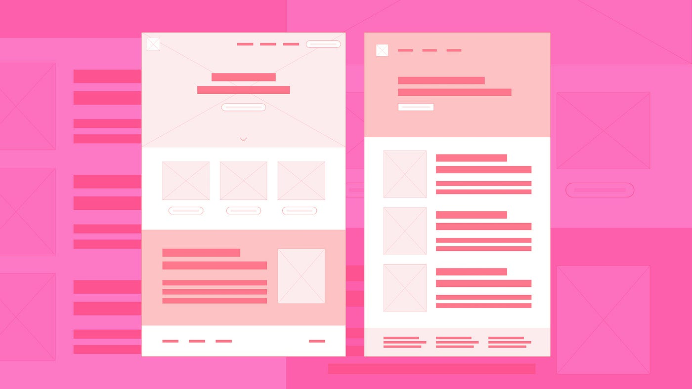
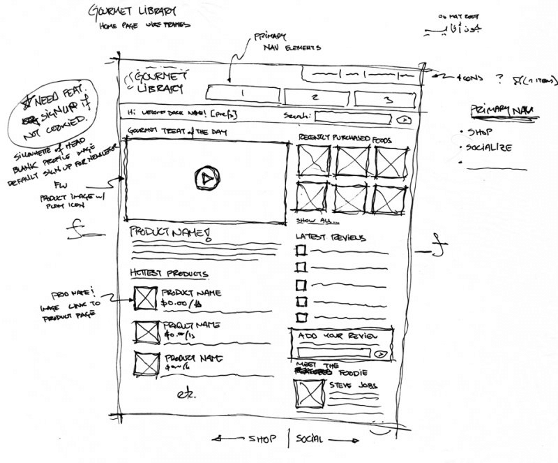
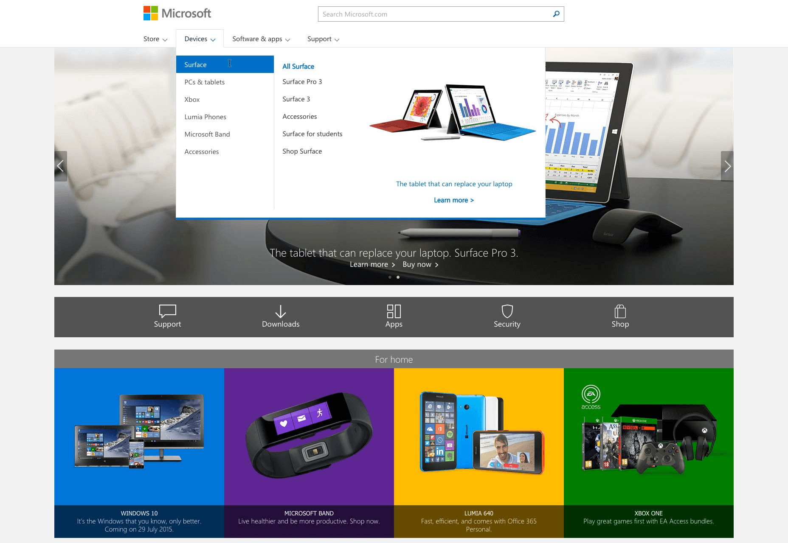
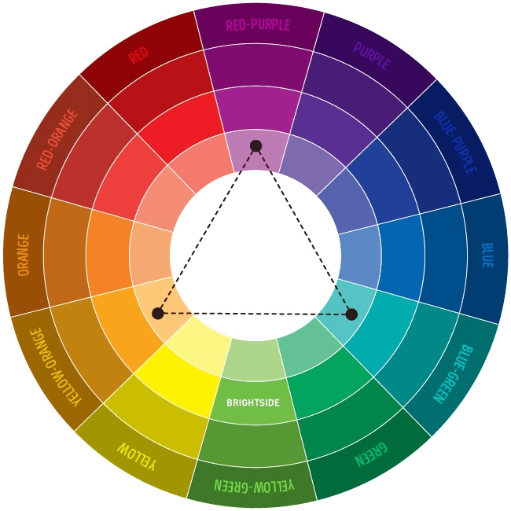
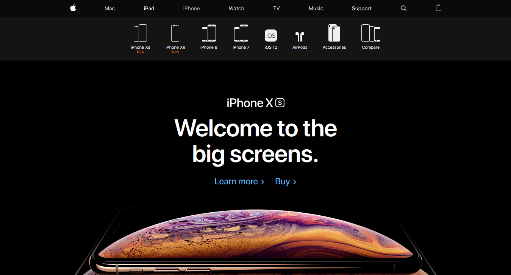

How to Make Your Website Look Beautiful When You’re Not a Designer
(Last Update On: January, 25 2023)
It might not seem like such a big deal, but the way your website looks matters a lot. In a recent study by Forrester Research, they found that a well designed interface can increase conversion rates on your website by 200%.
But designing your own website is hard.
Where do you start? Which font should you choose? Which color? Where should the menus go? These — and many other questions — can make you give up before you even get started.
Step 1: Choose the Tools You’ll Use To Build Your Website
The many tools available online are what make it possible for you to design and construct your own website without hiring a web designer.
Right now, there are two ideal types of software you can use to design your website:
1. Content Management System (CMS):A content management system, like WordPress, is the easiest tool with which you can design your website. That’s because it comes with templates, which are ready-made website designs you can simply install and customize until you get the look you want.
2. Website Builders:A website builder is a drag-and-drop tool which lets you design a website professionally without any special knowledge. You control the look of each and every element (textbox, widget, button, etc.) and can change its design and location just by using your mouse.
If you want to get through designing your website quickly, you should choose a CMS. But if you want to have more control over the design of your website, you should choose a website builder.
Step 2: Prepare Your Website’s Wireframe
Note: If you’re going to use a CMS and its templates for your website’s design, you can skip this step. But, if you’ll be starting from scratch with a website builder, read on.
If you are really ambitious about creating a unique design for your website, you should start by building a wireframe.
A wireframe is a structural representation that shows what your website will look like. Think of it as your website’s blueprint, which, like a blueprint for a house, will guide you on how to build your website.
Here is an example of a wireframe for Back To My Body’s website:

This simple wireframe gives a solid idea what the dashboard will look like.
It shows
1. The structure of the website
2. The website’s navigational hierarchy
3. Which content pieces will go where
You don’t need to use fancy software to design your website’s wireframe. You can simply use a good ol’ piece of paper and a pen to create a wireframe like this:

Step 3: Identify What Pages Your Website Will Have
Before you start the wireframe process (or edit a template), you’re going to decide what pages your website will have. And to do that, you’ll have to ask yourself what’s the number one thing you want your website to do.
Do you want it to sell products? Showcase information and articles? Tell what your service or products are capable of? Introduce your company or business?
Once you answer this question, it will become easier for you to decide what pages you want on your website.
Here are some common pages many websites have:
1. Homepage
2. Blog
3. About Us
4. Contact
5. Pricing
Of these pages, the most common page on every single website (which your website will have as well) is the homepage.
Traditionally, these are the parts into which a homepage is divided:
1. Header: The header generally includes your company/business logo, the secondary menu, and other elements like the search box, cart widget, or something else.
2. Primary Menu: The primary menu includes navigation links to the pages your visitors will be most interested in, and is central to your website. This can include links to your products, services, articles, and more. The primary menu usually includes links to whole categories or main sections.
3. Secondary Menu: The secondary menu includes links to secondary pages that aren’t central to your website, but still need to be there. Some secondary menu items are ‘advertise’, ‘privacy policy’, ‘terms of use’, and more.
4. Main Content: This is the main area of your website. It will introduce readers to your website as well as highlight your latest products, announcements, services, and content.
5. Sidebar: A sidebar can include widgets such as a subscribe form, archive, social share buttons, and other CTAs you might want your visitors to act on. The reason for that is sidebar items stay in view no matter what page your visitors are on.
6. Footer: A footer acts as the last safety net for your website. Here, you can place navigation links, sitemap, subscribe forms, widgets, and other things you might want your visitors to click on before leaving your site. You can also add privacy policy, terms of use, and other important pages in your footer as well.
Once you list out the pages you want, you can start creating the wireframe of your website — or start adding the pages to your template on WordPress.
Five Tips That Will Help You Design a Beautiful Website
Now that you know the basics of structuring your website, here are a few tips you should keep in mind when designing it.
1. Start with Your Website’s Navigation Structure
When visitors land on your site, they should easily and quickly find what they are looking for. Good navigation is responsible for making that happen.
The way to do that is by dividing your content into categories and putting the links of these categories in your primary and secondary menus.

The Microsoft website is a great example of this.
Their primary menu only has four links, i.e., Store, Devices, Software, & Apps. Each menu item has its own dropdown menu, which leads to another menu shown on the right side.
This intelligent way of categorizing menu items makes it easy for users to find what they want and prevents information overload at the same time.
By cleverly using categories and subcategories — and by creating dropdown menus — you too can simplify your website’s navigation and make it easy for your visitors to browse through your website.
Plus, creating a navigational structure will help you decide how many pages you need for your website and where each page should go. This will be especially useful if you’re building a wireframe for your website.
2. Create a Style Guide for Your Website
Spending time to create a style guide for your website is one of the most effective things you can do to make your website beautiful.
Your style guide dictates not only how your website will look, but also how your social media pages, advertising banners, and other digital media assets look as well.
There are five major components of a style guide. Let’s briefly discuss each one:
1. Brand Story
The first thing you need to do is introduce yourself to the world:
Who are you? Why do you exist? What’s your mission? What’s your vision?
These questions are important because, not only will your brand story help you attract the right audience, but it will also help you set the basis for your website design’s ‘personality’.
Will it be chic and jazzy? Warm and professional? Cool and corporate? Fun and energetic?
The only way you’ll be able to decide this is if you have a brand story, accompanied by a vision, mission statement, and a set of core values.
2. Logo
The next thing you need to decide for your website is your logo. There are many tools out there which let you design your logo for free. But if you want to opt for something more professional, you can hire a designer from marketplaces like Fiverr, Upwork, and 99Designs.
3. Color Palette
Your website needs to have a color which you’ll put in elements such as the logo, navigation menus, backgrounds, images, and illustrations.
To get started, you should choose a combination of three colors for your website:
- A Primary Color
- A Secondary Color
- A Tertiary Color

This helpful chart by BrightSide shows a great way to choose a combination of three colors for your website. For the perfect combo, all three of your colors should be equidistant from each other on the circle which, when connected, form a perfect triangle.
According to them, combining colors this way will “produce a high contrast effect while preserving ’harmony.’ Such a composition looks vibrant even when you use pale and unsaturated colors.”
You can apply the primary color with different hues to your website’s background and elements. Your font can have the secondary color and should be dark. Your tertiary colors can be used in conjunction with your primary and secondary colors to make them stand out, and therefore, should be neutral.
4. Typography
In web design, fonts are a big part of your overall website’s design. That’s because they ‘speak’ to your visitors and show them what kind of personality your website has.
Want to look luxurious, classy, important, or casual? Choosing good typography is the best way to convey that look.

As a rule of thumb, there are three fonts you should choose for your website. Any more than that and your website will become confusing to your visitors.
- The first font is your primary font. This font will be used in headings everywhere on your website, and as such, should look big, bold, and demand attention from anyone who views it.
- The next font is your secondary font. This will be used for the text. This font should be easy to read, with plenty of spacing and shouldn’t be cursive or in a strange design. It should, however, be easy to scan.
- Finally, the last font you want on your website is the accent font. This font will be used in CTA buttons, menu bars, and as an accent to your primary and secondary fonts.
One thing you should keep in mind is, while the fonts will be different, they should compliment each other. To understand how to do that, you can browse sites like Dribbble and Awwwards to get an idea of how professional designers combine different fonts.
5. Imagery and Illustrations
Your website will need images or illustrations — or a combination of both. The images on your website will be directly responsible for evoking the emotions of your visitors.
That’s why choosing the right type of pictures is crucial for your website to set the right tone with your audience.
For example, if you’re selling shoes on your ecommerce store, you’ll want energetic images of people running, hiking, climbing, and doing other high-intense activities. You wouldn’t want an image of a person sleeping on their bed.
Not only is it important to choose the right image, it is also important to make sure it’s of high quality and looks genuine.
3. Make Sure Your Website’s Design Looks Clean and Uses Whitespace
Today, people have extremely low attention spans. That’s why you need to ensure your website looks clean the moment your visitors land on it.
If your visitors find your website confusing, they won’t come back. And, of the people who leave your website due to a bad experience, 88% are less likely to ever return again. But, on the bright side, if you implement a clean look to your website, you’ll increase conversion rates up to 400%.
To make sure your website looks clean, use lots of whitespace in your product images, navigational elements, and typography.
This makes it easy for your visitors to ‘scan’ your website and digest the information presented within. It will help you increase focus on the parts of the website you want.

The black background you see here in Apple’s website isn’t useless. It acts as a whitespace which puts focus on what matters, i.e., the navigation menu, heading, and the image of the iPhone.
4. Find Your Website’s ‘Voice’
In real life, the tone in which you text your mom and dad is probably different from the way you text your best friend. Similarly, your website’s ‘tone’ will be different depending on the audience it serves.
If it’s targeted towards millennials and is for a productivity item, you might want to speak in a ‘fun’ voice. On the other hand, if you deal with Fortune 500 CEOs, you might want your website to speak in a more professional tone.
Again, your brand story plays a great role in deciding this.
5. Optimize Your Website’s User Experience (UX)
Steve Jobs once famously said that “design is not how it looks, it’s how it works”.
The same holds true for your website’s design.
It doesn’t matter how beautiful your website is, or how many animations and graphics it has; if it doesn’t load properly, you’ll lose visitors and, more importantly, your sales.
To make sure this doesn’t happen, it’s important to optimize your website for speed and performance. Here are three ways you can do that:
Create a mobile version of your website: Today, more people access the internet from their phones. That’s why it’s important to make your website ‘responsive’ — meaning it loads the mobile version when accessed from phones.
Use a CDN network to load your website quickly: A CDN network stores your media files in servers around the world, so when users request access to your website, they get directed to a server that’s closer to their region. This makes your website load quickly for all your visitors, no matter where they are.
Compress your images with an image compressor: An image compressor simply reduces the size of images and graphics on your website so it loads quickly.
By focusing on both your website’s design and performance using these design tips, you’ll be able to make your website a pleasure to browse for your visitors.
And, while these tips will not turn you into a professional web designer overnight, they’ll help you build a beautiful website for your next online business venture or side project.
Are you in the process of designing your website by yourself? Have you encountered any challenges? Tell me all about it in comments!
Post Categories
Other Blogs :

Beautiful Websites
On this page, we’ll provide you with six tips for creating beautiful websites. Keep reading to learn more about how to create a visually appealing and functional website for your audience. You can't have amazing web design without spiffy forms.
Read More
Visually Appealing Websites
Everyone seems to have made a website these days. The Web is getting more crowded by the day, with literally dozens of websites being added as you read this article. It is becoming harder and harder to get noticed among the masses.
Read More
Leave a Comment